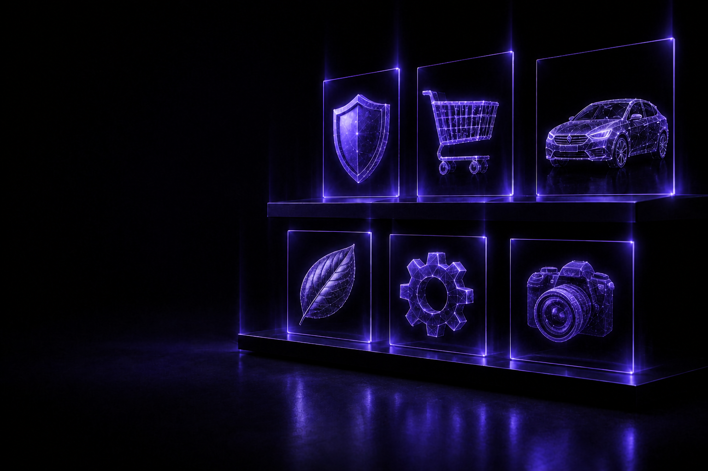

Ready-to-use approach
Computer vision models for common industry use cases
Computer vision products for industry use cases. Scope, deployment and timelines are confirmed on enquiry.
A computer vision use case for identifying personal protective equipment in workplace camera views. Discuss camera placement, review workflows and deployment scope on enquiry.

Browse computer vision use cases by category or search the catalog.
Try a different term or clear the active filters.
Product details, deployment scope and timelines are confirmed on enquiry.
Playground uses demo data. Select a scene to explore the interface.
Computer vision models for common industry use cases
Deployment options are discussed for your hardware and latency needs
Models can be discussed for fine-tuning on your own data
Designed with Indian industry use cases in mind
Explore computer vision use cases by industry. Scope and suitability are confirmed on enquiry.
Tell us what you want to detect and the FrameIQ team can review your enquiry.